Bear, stage m
tiptoe_start
 S, 4 framesSE, 4 frames
S, 4 framesSE, 4 frames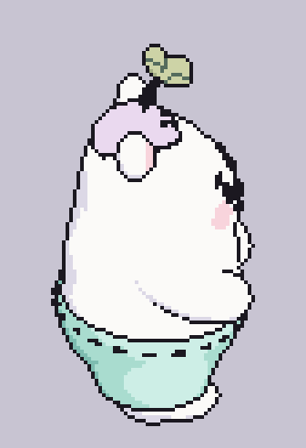
E, 4 framesNE, 4 frames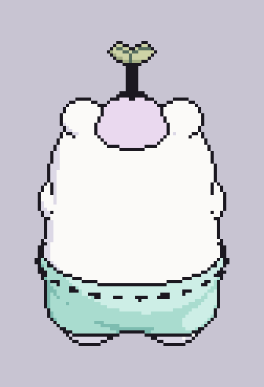
N, 4 framesNW, 4 framesW, 4 framesSW, 4 framestiptoe
S, 12 frames loopSE, 12 frames loopE, 12 frames loopNE, 12 frames loop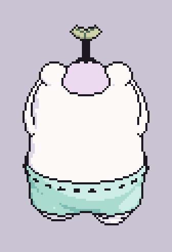
N, 12 frames loopNW, 12 frames loopW, 12 frames loopSW, 12 frames loop
tiptoe_stop
 S, 5 framesSE, 5 framesE, 5 framesNE, 5 framesN, 5 framesNW, 5 framesW, 5 framesSW, 5 frames
S, 5 framesSE, 5 framesE, 5 framesNE, 5 framesN, 5 framesNW, 5 framesW, 5 framesSW, 5 framesskip_start
 S, 4 framesSE, 4 framesE, 4 framesNE, 4 framesN, 4 framesNW, 4 framesW, 4 framesSW, 4 frames
S, 4 framesSE, 4 framesE, 4 framesNE, 4 framesN, 4 framesNW, 4 framesW, 4 framesSW, 4 framesskip
 S, 12 frames loopSE, 12 frames loop
S, 12 frames loopSE, 12 frames loop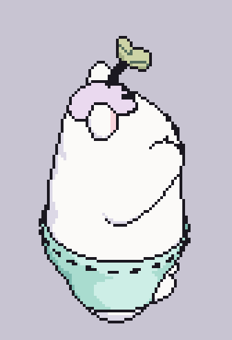
E, 12 frames loop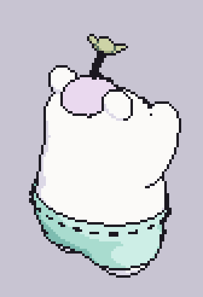
NE, 12 frames loop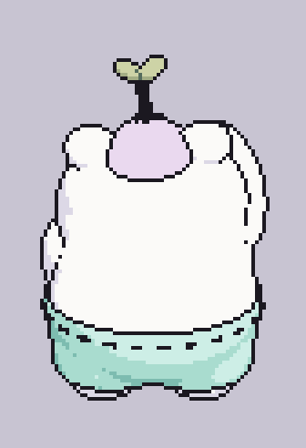
N, 12 frames loop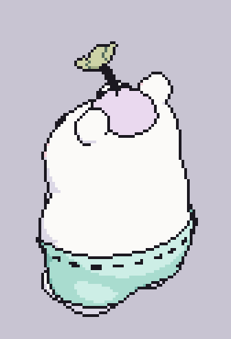
NW, 12 frames loopW, 12 frames loopSW, 12 frames loopskip_stop
S, 5 framesSE, 5 framesE, 5 framesNE, 5 framesN, 5 framesNW, 5 framesW, 5 framesSW, 5 frames
shuffle_start
S, 4 framesSE, 4 framesE, 4 framesNE, 4 framesN, 4 framesNW, 4 framesW, 4 framesSW, 4 frames
shuffle
 S, 16 frames loopSE, 16 frames loop
S, 16 frames loopSE, 16 frames loop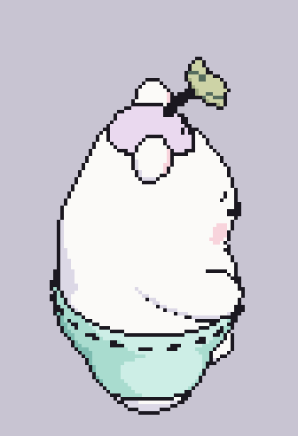
E, 16 frames loop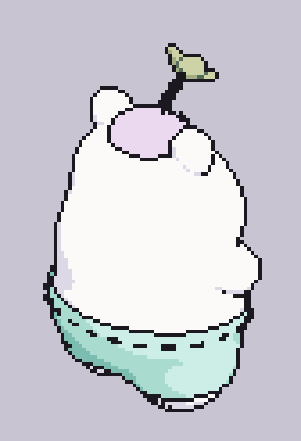
NE, 16 frames loop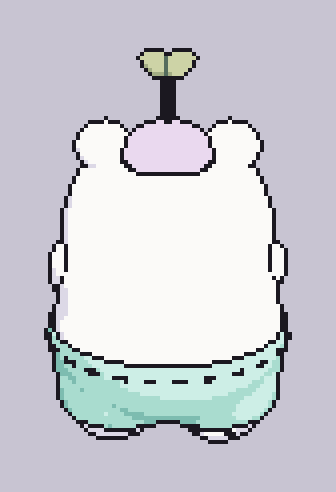
N, 16 frames loop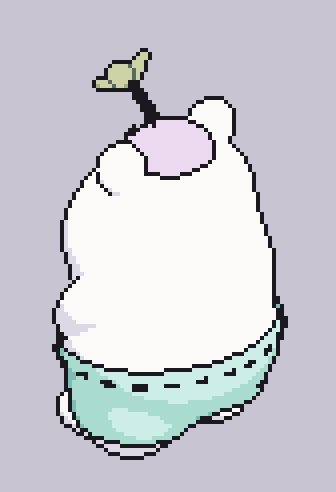
NW, 16 frames loopW, 16 frames loopSW, 16 frames loopshuffle_stop
 S, 6 framesSE, 6 framesE, 6 framesNE, 6 framesN, 6 framesNW, 6 framesW, 6 framesSW, 6 frames
S, 6 framesSE, 6 framesE, 6 framesNE, 6 framesN, 6 framesNW, 6 framesW, 6 framesSW, 6 framesback_start
 S, 4 framesSE, 4 framesE, 4 framesNE, 4 framesN, 4 framesNW, 4 framesW, 4 framesSW, 4 frames
S, 4 framesSE, 4 framesE, 4 framesNE, 4 framesN, 4 framesNW, 4 framesW, 4 framesSW, 4 framesback_waddle
S, 12 frames loopSE, 12 frames loopE, 12 frames loopNE, 12 frames loop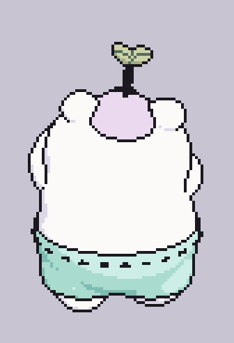
N, 12 frames loopNW, 12 frames loopW, 12 frames loopSW, 12 frames loop
back_stop
S, 5 framesSE, 5 framesE, 5 framesNE, 5 framesN, 5 framesNW, 5 framesW, 5 framesSW, 5 frames
sheet (3x)